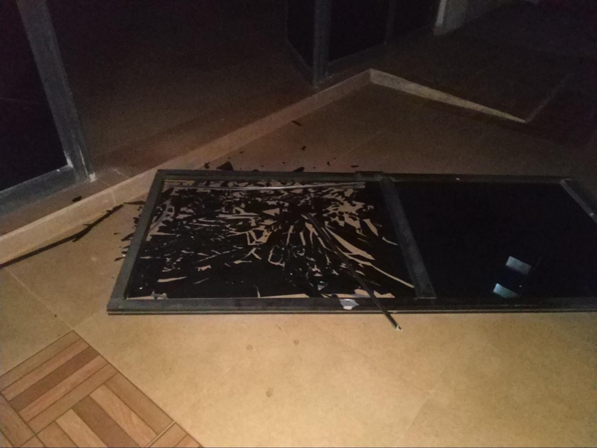

I ended up staying over at the lab till about 04:30 AM and while we were going back, the wind was intense, as in it almost felt like a hurricane, but we later heard from some people that monstrous wind was normal in the area. But it was still unnerving, as I went back with Anuvind, near the hostel there was something a bit off, and as we got closer, we noticed that the wind was so intense that the glass door broke off the hinges and was lying in pieces.

What didn’t make sense however was the position the door was left in, it looked like the wind either came from the inside (there’s a large open area in the middle of the building) or maybe someone could’ve intentionally broken the door. No clue, the inside of the building all the way till we got to the dorm was very horror movie like, with the wind howling and causing windows and doors to open and close, it all seemed very surreal, I was starting to wonder if it was the sleep deprivation and the adrenaline which caused all this. I thought I’d take a small nap so I’d be better off in time for the presentation and the closing ceremony. Big mistake.
I woke up at around 13:30 and I freaked out because our presentation was supposed to be at 09:00 or 10:00 and none of my roomates woke me, maybe they tried and failed, but I had no time to think so I jumped out of bed, got ready as fast as I could and rushed to the lab, by then the closing ceremony had begun and I almost had a nervous breakdown because people were staring at me, when i walked in and looked disappointed, I was disappointed in myself for oversleeping and not being able to attend my own presentation. I went over to my teammates and asked how it went and they seemed disappointed themselves but they said it went okay, which wasn’t what I wanted, but then it couldn’t be helped. The project was well received at least, and it was a learning experience for me, in more ways than one.
The closing ceremony was overall fun, I went to the dias and spoke a few words on my experience, and I had no idea what I was saying to be honest because my mind was both half asleep and half still lingering on the fact that I missed my presentation and disappointed everyone, but then I guess it wasn’t too bad overall.
After I spoke, Koustubh, a friend from Team A spoke on the dias, and he mentioned my name and called me cool on stage, and I was flattered, and then after his speech he came down and thanked me, because apparently my smiling(and flustered) face gave him confidence to speak which actually helped me feel better and get back to my normal self. All of us took pictures, and we were all saying our goodbyes and it was all sad but also happy, in the sense that we all spent a whole week getting to know each other and bond and make stuff together, and I’ve met some friends who I can collaborate with in the near future.
Overall, Techtop has had a deep impact on me, not just in terms of learning skills, and meeting people, but personally, as a person, I can say I’ve improved. I made a lot of mistakes along the way, but I learned from it and that’s one of the best things I can take away from anything. I learned that I can make anything, all I need to do is to get up and go do it.
None of this would’ve been possible without the amazing mentors we had and special thanks to Rajesh sir, he was an Amazing and inspiring teacher throughout and I’m still deeply honoured to have been able to take part in this innovation summit.
Here's two of the concept images I made for our presentation:
That’s it for my documentation for what happened during the week, if you’d like to stay updated on what’s happening with me, you can check out my social media pages:
Instagram (@purrplelynx)
Twitter (@thisisnotkuro)
Tumblr (purrplelynx.tumblr.com)
If you actually managed to read through this far, then I must thank you as well for taking the time to read this.
If you're a participant or mentor from TechTop 2018, all I have to say is Thank you so much, because I learned somehting from ALL of you. I learned some hindi, basic gujarati phrases, and even got to try some of the awesome gujarati snacks and my coding skills are noe better than ever, I can say with confidence that I can 3D print something after making it from scratch using a CAD software, among so many more things, and the best part was all of you guys, because I generally used to be the type of guy who is more reserved and tend to not speak much but I got so excited at all the cool stuff and honestly, it was a great experience to be part of something like this. Thank you so much!
Have a nice day/evening wherever you are!
{kind=link}
{kind=link}